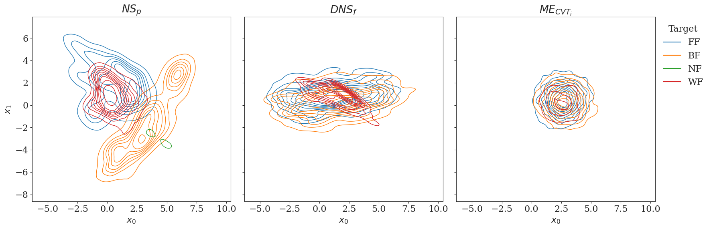
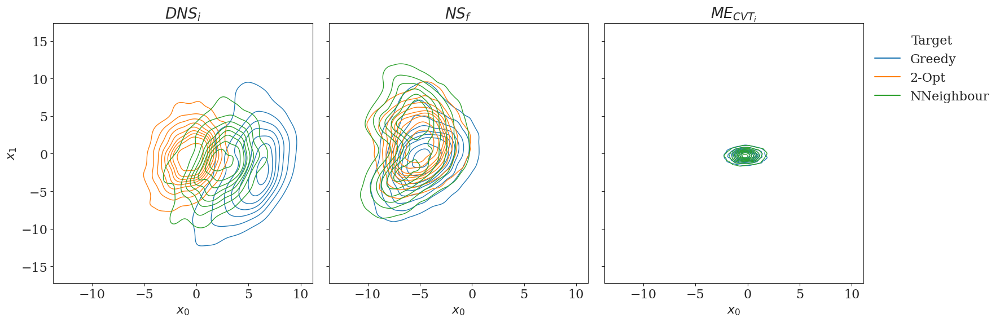

Benchmarking Quality Diversity Methods for Instance Generation in Combinatorial Domains
Abstract
The ability to generate large sets of diverse instances informs research into algorithm-performance, portfolio selection, and algorithm selection and configuration methods. The family known as Quality-Diversity (QD) algorithms are increasingly being used as instance generation techniques to provide instances that are both diverse and discriminatory. However, there is currently no clear evidence as to how to choose either the most appropriate QD algorithm or how to define the descriptor required by these methods to capture diversity. We address this by comprehensively benchmarking a suite of QD algorithms in three combinatorial optimisation domains via metrics that measure coverage of an instance space and number of discriminatory instances generated per solver. Three families of QD Algorithms are evaluated in conjunction with three types of descriptors ( feature-based, performance based and feature-free). We observe that QD approaches based on Novelty Search (NS) combined with a feature-free descriptor achieve the best performance in terms of instance space coverage for the domains evaluated.
Best Quality Diversity methods for Knapsack Domain with N = 50

Best Quality Diversity methods for Bin Packing Domain with N = 120
